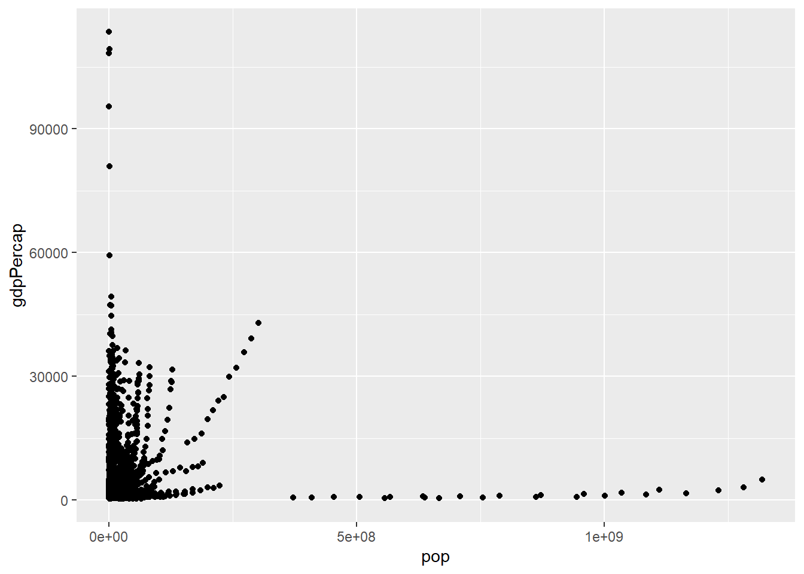
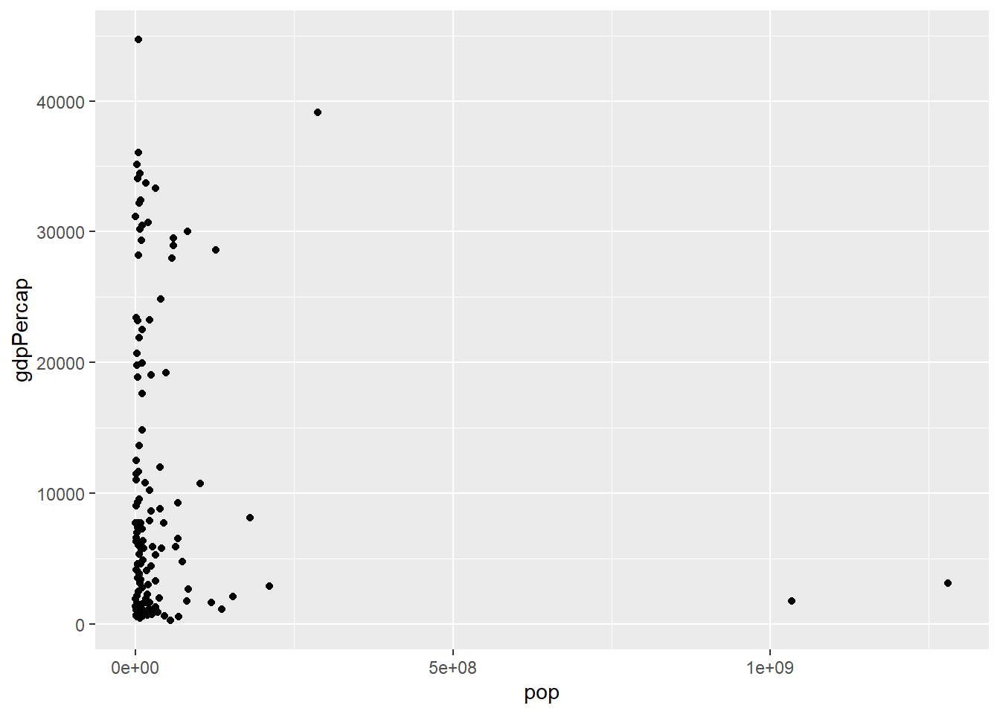
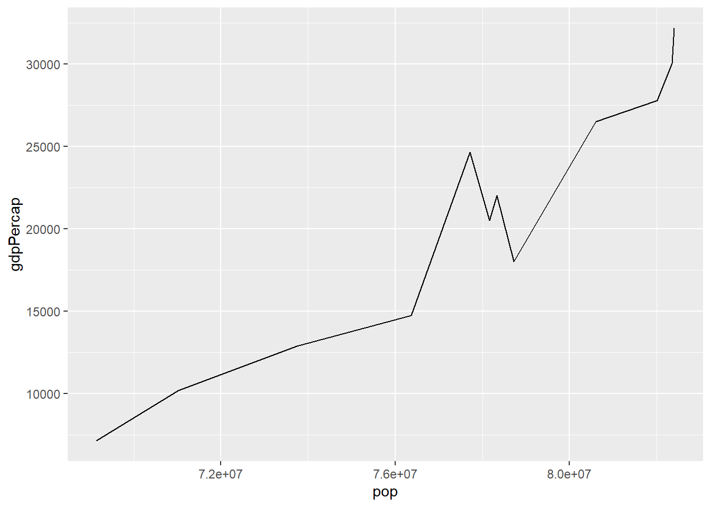
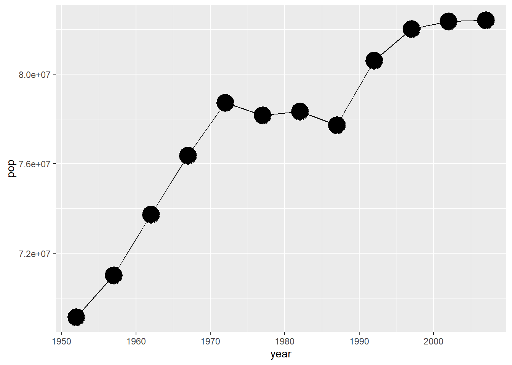
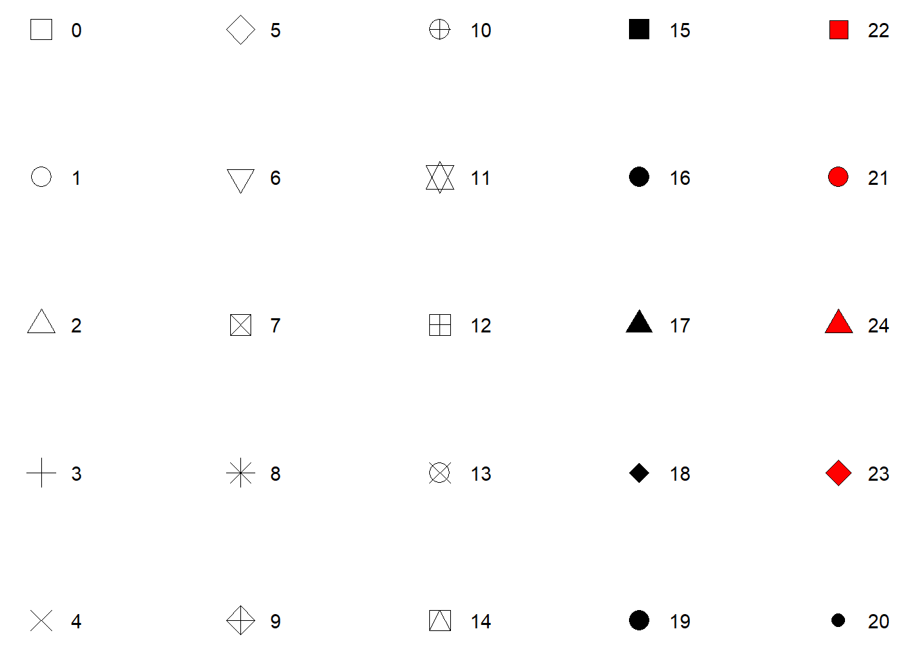
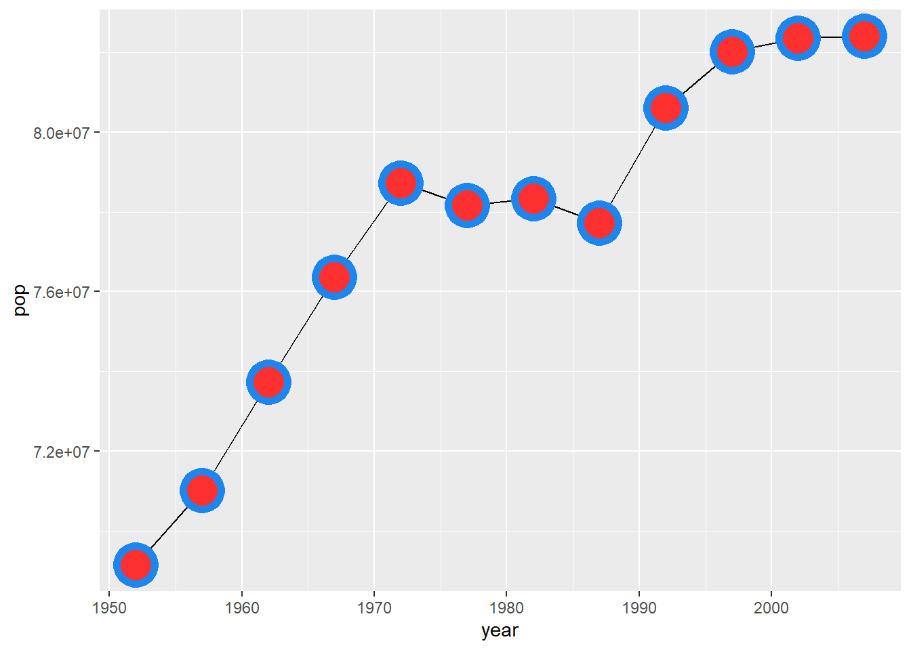
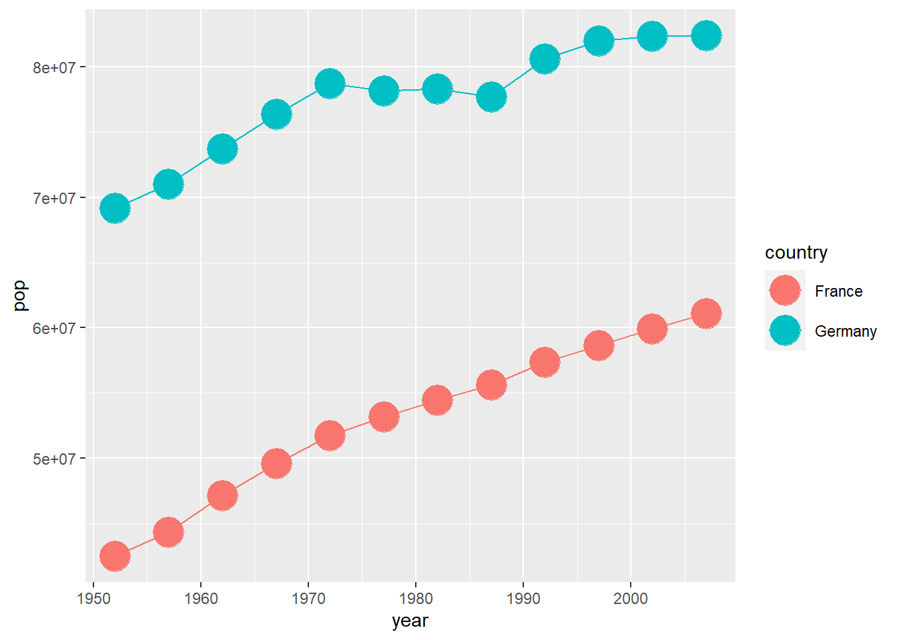
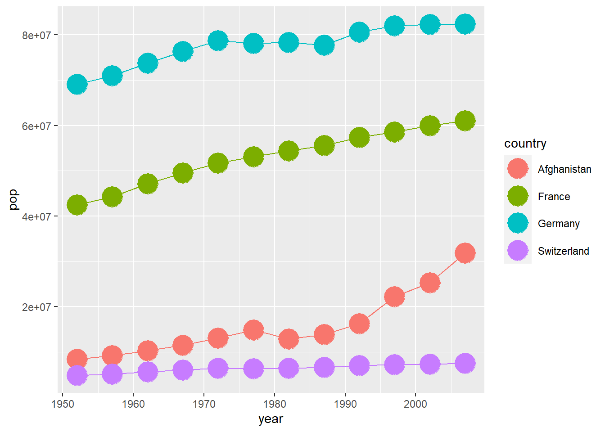

Lade das tidyverse Package, indem du library(tidyverse) in die Konsole eingibst oder in einem Skript / einer Markdowndatei ausführst. Das Package enthält u.A. ggplot2, damit wir (tolle) Grafiken erstellen können. Beim Laden wird außerdem die folgenden Nachrichten erzeugt.
v ggplot2 3.3.5 v purrr 0.3.4
v tibble 3.1.6 v dplyr 1.0.7
v tidyr 1.1.4 v stringr 1.4.0
v readr 2.0.2 v forcats 0.5.1
Warning: package 'ggplot2' was built under R version 4.0.5
Warning: package 'tibble' was built under R version 4.0.5
Warning: package 'tidyr' was built under R version 4.0.5
Warning: package 'readr' was built under R version 4.0.5
Warning: package 'dplyr' was built under R version 4.0.5
Warning: package 'forcats' was built under R version 4.0.5
-- Conflicts ------------------------------------------ tidyverse_conflicts() --
x dplyr::filter() masks stats::filter()
x dplyr::lag() masks stats::lag()
Lade nun auch das gapminder package und schau dir den anschließend verfügbaren Datensatz gapminder an (einfach in die Konsole eingeben oder im Skript/Markdown ausführen). Du solltest den folgenden Output erhalten.
# A tibble: 1,704 x 6
country continent year lifeExp pop gdpPercap
<fct> <fct> <int> <dbl> <int> <dbl>
1 Afghanistan Asia 1952 28.8 8425333 779.
2 Afghanistan Asia 1957 30.3 9240934 821.
3 Afghanistan Asia 1962 32.0 10267083 853.
4 Afghanistan Asia 1967 34.0 11537966 836.
5 Afghanistan Asia 1972 36.1 13079460 740.
6 Afghanistan Asia 1977 38.4 14880372 786.
7 Afghanistan Asia 1982 39.9 12881816 978.
8 Afghanistan Asia 1987 40.8 13867957 852.
9 Afghanistan Asia 1992 41.7 16317921 649.
10 Afghanistan Asia 1997 41.8 22227415 635.
# ... with 1,694 more rows
Dies ist ein Datensatz in Form eines sogenannten tibble. Klingt erstmal merkwürdig, ist aber fürs Erste nicht viel mehr als eine Tabelle mit einem fancy Namen. Die Spaltennamen dieser ausgegebenen Tabelle sind einigermaßen selbsterklärend. Für den Fall der Fälle gibt es in R hilfreiche Dokumentationen zu Datensätzen, Funktionen und was man sonst noch so vergessen könnte.
Lass uns das Aufrufen der Dokumentation/Hilfe üben. Diese ist nämlich neben google (oder einer datenfreundlicheren Alternative) eine gute Anlaufstelle, um Probleme beim Programmieren zu lösen. Gib dazu entweder ?gapminder in die Konsole ein oder tippe F1, wenn sich dein Cursor über dem Wort gapminder befindet. In beiden Fällen öffnet sich die Hilfe in RStudio mit mehr Informationen.
Soweit so gut. Lies nun in der Dokumentation nach, wofür die Spaltennamen in dem tibble gapminder stehen. Nutze anschließend dieses Wissen, um mithilfe von ggplot() das Pro-Kopf-Bruttoinlandsprodukt gegen die Bevölkerungsgröße zu zeichnen. Dabei soll folgendes Punktdiagramm entstehen.

Reminder: Ein ggplot braucht 1. eine ggplot()-Schicht, 2. geom_*-Schichten, 3. das data Argument 4. das mapping (mit aes())
Das ist kein besonders schöner Plot. Vielleicht kann man mehr erkennen, wenn man sich nur die Daten aus dem Jahr 2010 anschaut. Probier dies nun als nächstes. Du wirst folgenden Plot erhalten:

Benutze filter(<Datensatz>, <Bedingung>) als data Argument
Naja. Das wird sicherlich auch nicht der Plot des Jahres, aber wir haben schon mal weniger überlappende Punkte. Vielleicht tun wir uns gut daran, erstmal nur ein Land anzuschauen. Gucken wir doch mal wie sich die Bevölkerung von Deutschland entwickelt hat. Extrahiere also die Daten für Deutschland und plotte die Bevölkerung über die Zeit als Liniendiagramm.

Plotte zusätzlich die Datenpunkte in das Bild, damit wir wissen, welche Daten tatsächlich da sind und wo einfach eine Linie gezogen wurde. Mach die Punkte größer, sodass sie gut erkennbar sind. Falls beim verändern der Punktgröße eine Legende erscheint, überlege nochmal, ob die Punktgröße aktuell etwas mit den zugrundeliegenden Daten zu tun hat.

Wo wir schon dabei sind, die Punkte zu verändern, lass uns doch gleich andere Punktformen wählen. Probiere doch mal ein paar der folgenden shape Parameter aus.

Ich persönlich mag shape = 21 sehr gerne. Mit dieser Form kann ich sowohl den Punkt füllen als auch den Rand verändern.
Versuche nun den folgenden Plot nachzubilden (falls du nicht weißt, welche aesthethics von geom_point() verändert werden können, so wirf einen Blick in den Abschnits “Aesthetic” in dessen Dokumentation). Ich gebe zu, dass der Plot jetzt auch keine absolute Schönheit ist, aber eine gute Übung ist es hoffentlich trotzdem. Ich habe übrigens die Farben dodgerblue2 und firebrick1 verwendet.

Ok, genug angepasst. Kommen wir wieder zurück zu den wesentlichen Dingen. Anstatt nur Deutschland anzugucken, wollen wir nun Deutschland und Frankreich vergleichen. Nutze als Filterbedingung country %in% c('Germany', 'France') und erzeuge so die folgende Grafik.

Nun passe den Code an, um mehr als zwei Länder zu vergleichen:

Anstatt die Punkte miteinander direkt zu verbinden, lass uns eine Ausgleichskurve zeichnen. Ersetze dafür geom_line() durch geom_smooth(), um folgenden Plot zu erhalten.